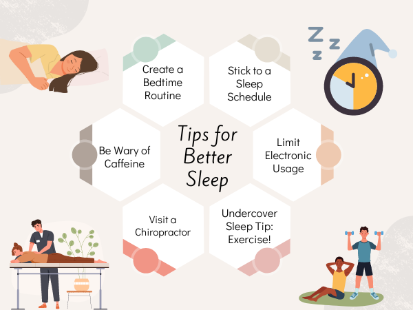

The Importance of Sleep for Mental Health
Just like exercise and diet, sleep is an important factor in your overall health. Yet many people don’t get enough of it. The Centers for Disease Control and Prevention found that more than a third of Americans sleep less than the recommended amount in 24 hours. This lack of sleep can lead to sleep deprivation, which affects people in many ways. When you consistently fail to get enough sleep, you risk feeling tired and run down, but sleep deprivation can also take a toll on mental health. In this article, we look at why sleep is so important for your mind and how it affects your mental well-being.
How Sleep Quality Affects Mental Well-Being
The CDC tells us that good sleep means getting uninterrupted and refreshing rest. It’s not just about how many hours you spend in bed, but how well you sleep during that time. Generally, falling asleep within 30 minutes and waking up no more than once a night are signs of quality sleep. When you get quality sleep, your brain creates new pathways to help you learn and remember things better. A good night’s sleep leaves you waking up feeling refreshed and ready to take on the day. Your mind becomes sharper, making problem-solving and decision-making easier. Missing out on quality sleep can take a toll on your mental well-being. People experiencing sleep deprivation symptoms have difficulty concentrating, feel more irritable or anxious and struggle with tasks that usually come easily. In some cases, poor sleep can lead to feelings of depression over time. 